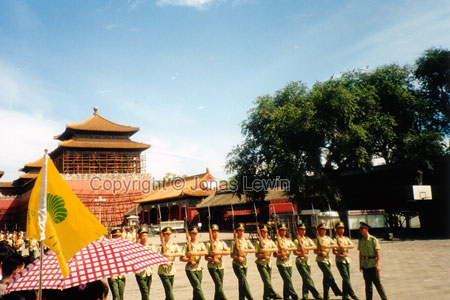

|
Beijing, 1999-08 The Forbidden City.
Yes;
this is actually a city within Beijing.

It
had more than 6000 inhabitants when it was forbidden. The walls around it
could easily be 50 meters thick. So, yes - it's forbidden. Well worth a
visit when you are in Beijing. Lots of Chinese culture. On the buildings
there where some figures. To find out how holy a building was, all you had
to do was to count the figures on the end of the roof. The highest number
was 9, except where the emperor slept. It had 10 figures, indication the
holiest of all holy places. Nobody except him where allowed inside. The
buildings almost always goes on red and yellow. The classic Chinese red any
yellow, that is.
The
thing I miss when walking there are the "original inhabitants".
What I means is: imagine walking around in New York. There are nobody
working there, nobody living there. The only people there are tourist for
the day. Then you start thinking of how it must have been for the people
living there, and all the questions that you wanted to ask them.
Anyway, This way is better than not seeing it, and it is one of the greatest
places in the world to visit.
|